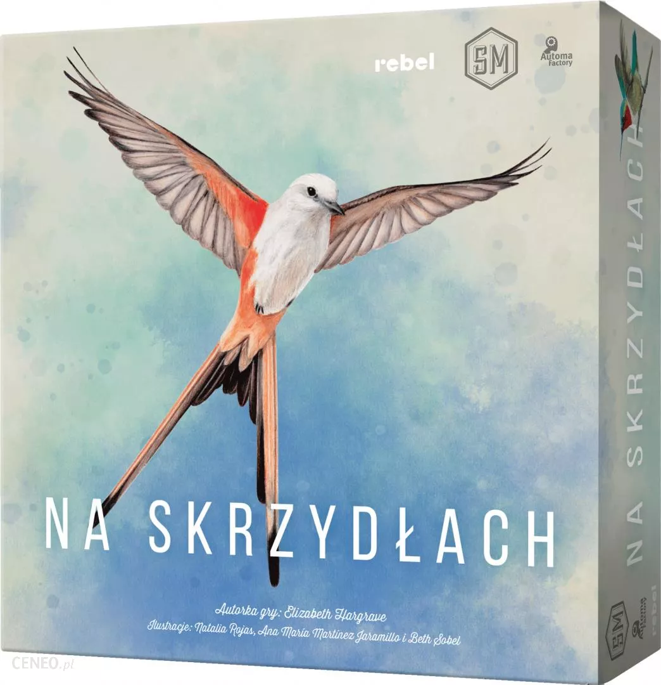

SCYTHE


Liczba graczy: 1-5 osób
Wiek: 14+
Czas gry: ok. 90-115 minut
Wydawca: Phalanx Games Polska
Scythe to strategiczna gra planszowa dla 1-5 graczy, w której wcielisz się przywódcę jednego z narodów Europii Wschodniej w alternatywnej rzeczywistości lat 20. ubiegłego stulecia. Będziesz odkrywał i podbijał kolejne terytoria. Zwerbujesz nowych rekrutów i zgromadzisz surowce. W końcu będziesz wysyłał do walki siejące postrach bojowe mechy, którymi zmiażdżysz innych graczy. A to wszystko dla chwały, sławy i pieniędzy. Bowiem zwycięzcą gry zostanie gracz z największą liczbą zgromadzonych monet. Zdobędziesz ich tym więcej, im większa będzie twoja popularność, im bardziej rozwinięte będzie twoja armia, a także im więcej terenów i zasobów będziesz kontrolował. Planuj, podbijaj, zwyciężaj!
Scythe to gra idealnie łącząca ze sobą mechaniki znane z eurogier z mocno klimatyczną rozgrywką. Zachwyci zarówno graczy, którzy lubią rozwój, optymalizację i strategiczne planowanie, jak również tych, którzy cenią w grach wyraźną warstwę fabularną, elementy przygodowe i powiązanie zasad gry z tematem.
SMALLWORLD
Liczba graczy: 2-5 osób
Wiek: 8+
Czas gry: ok. 60-90 minut
Wydawca: REBEL
Small World, stworzony przez Philippe Keyaerts jako następca jego szeroko nagradzanej poprzedniej gry Vinci, to świat zamieszkany przez różnorodne rasy - krasnoludy, czarodziejów, amazonki, gigantów, orki a nawet ludzi. Każda z tych nacji posyła do walki swoje armie - wszystko, aby zdobyć chociaż odrobinę nowego terytorium i wymazać inne plemiona z powierzchni ziemi.
Niestety, cywilizacje w miarę wzrostu zatracają swoją dynamikę i możliwości rozwoju, dopada je stagnacja a w końcu upadek. Kluczem do zwycięstwa w Small World jest nie tylko wybór spośród 14 ras i 20 specjalnych mocy; najważniejsze to przewidzieć upadek i w odpowiednim momencie wycofać się z danej cywilizacji, udzielając swojego poparcia nowej sile, która rozwinie się na gruzach tych, którzy przeminęli.
NA SKRZYDŁACH
Liczba graczy: 1-5 osób
Wiek: 10+
Czas gry: ok. 40-70 minut
Wydawca: REBEL
W tej przepięknie ilustrowanej grze uczestnicy rozwijają własne rezerwaty, które są ostoją dla wielu różnorodnych gatunków ptactwa. Każdy kolejny okaz stanowi szansę na wzbogacenie naszej kolekcji, a także rozwój rezerwatu i realizację celów.
Już przy pierwszym kontakcie gra zwraca uwagę estetyką wykonania i dopracowaniem poszczególnych elementów. W pudełku znajdziemy wieżę na kości w kształcie ptasiego karmnika, figurki jajek, specjalną tackę na karty, a także – a może przede wszystkim – karty ptaków ozdobione przepięknymi grafikami. Obcowanie z tak wykonaną grą jest niezwykle przyjemne.
Jednak Na skrzydłach to nie tylko wygląd! Dzięki temu, że karty wzajemnie na siebie wpływają, gra wymaga umiejętnego planowania, a przyjęte strategie wspaniale rozwijają się wraz z kolejnymi rundami. Ważna jest tutaj optymalizacja działań i równomierny rozwój, aby zdobyć jak najwięcej punktów.